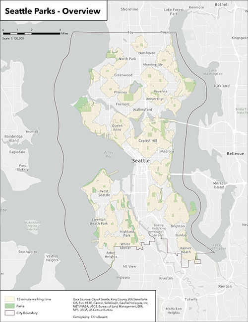
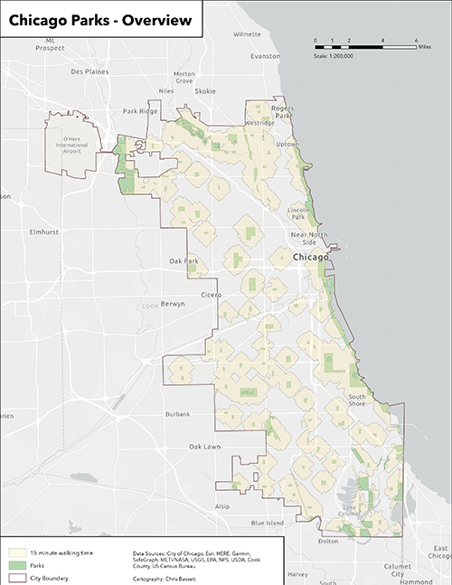
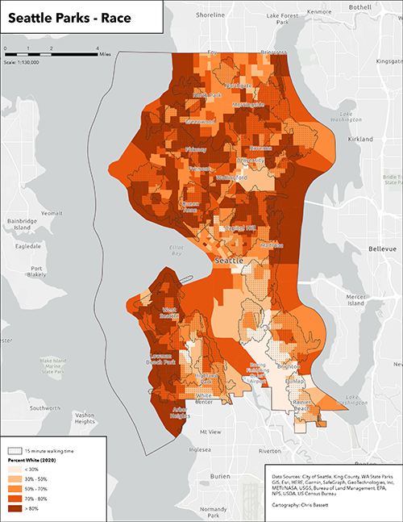

City Parks, Demographics and Travel Time




This project examined walkable access to parklands over ten acres in size in three large cities and demographic characteristics of populations within or outside of a walking distance of fifteen minutes. Increased distance from parks (greater than a fifteen minute walk) generally correlated with lower household income and a less white population, but counter-examples to both of these trends exist in the data set, pointing to a potentially more complicated narrative.